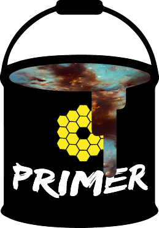

The PRIMER Team
 For the PRIMER collaboration only: Internal team pages (restricted access).
The PRIMER collaboration consists of 100 scientists from 45 institutions in 13 countries:
- James S. Dunlop (PI), Edinburgh
- Garth D. Illingworth (Admin PI), UC Santa Cruz
- Roberto G. Abraham, Toronto
- Matthew Asby, Harvard
- Micaela Bagley, UT Austin
- Philip N. Best, Edinburgh
- Angela Bongiorno, INAF
- Rychard Bouwens, Leiden
- Rebecca A. Bowler, Manchester
- Gabriel Brammer, Copenhagen
- Malcolm Bremer, Bristol
- Antonello Calabro', INAF
- Adam Carnall, Edinburgh
- Marco Castellano, INAF
- Michele Cirasuolo, ESO
- Christopher Conselice, Manchester
- Fergus Cullen, Edinburgh
- Sam Cutler, UM Amherst
- Romeel Dave, Edinburgh
- Pratika Dayal, Kapteyn AI
- Avishai Dekel, Hebrew University
- Mark Dickinson, NOIRLab
- Callum Donnan, Edinburgh
- Kenneth J. Duncan, Edinburgh
- David Elbaz, CEA
- Richard S. Ellis, U College London
- Harry C. Ferguson, STScI
- Andrea Ferrara, SNS
- Steven L. Finkelstein, UT Austin
- Adriano Fontana, INAF
- Steven Furlanetto, UC Los Angeles
- Johan P. U. Fynbo, Copenhagen
- Simona Gallerani, SNS
- Jonathan P. Gardner, NASA GSFC
- Mauro Giavalisco, UM Amherst
- Andrea Grazian, INAF
- Norman Grogin, STScI
- Yuichi Harikane, Tokyo
- Philip F. Hopkins, Caltech
- Olivier Ilbert, LAM
- Stephanie Juneau, NOIRLab
- Intae Jung, NASA GSFC
- Jeyhan Kartaltepe, RIT
- Susan Kassin, STScI
- Olivier Kauffman, LAM
- Sadegh Khochfar, Edinburgh
- Allison Kirkpatrick, U of Kansas
- Dale D. Kocevski, Colby
- Anton M. Koekemoer, STScI
- Ivo Labbe, Swinburne
- Nicolas Laporte, Cambridge
- Rebecca L. Larson, UT Austin
- Ray A. Lucas, STScI
- Daniel K. Magee, UC Santa Cruz
- Benjamin Magnelli, CEA
- Charlotte Mason, Copenhagen
- Henry J. McCracken, CNRS, IAP
- Derek McLeod, Edinburgh
- Ross McLure, Edinburgh
- Emiliano Merlin, INAF
- Andrei Mesinger, SNS
- Bo Milvang-Jensen, Copenhagen
- Jeffrey A. Newman, Pittsburgh
- Quingling Ni, Edinburgh
- Pascal Oesch, Geneva
- Masami Ouchi, Tokyo
- Camilla Pacifici, STScI
- Casey Papovich, Texas A&M
- John Peacock, Edinburgh
- Molly Peeples, STScI
- Laura Pentericci, INAF
- Pablo G. Perez-Gonzalez, CSIC-INTA
- Corey Pirie, Edinburgh
- Norbert Pirzkal, STScI
- Alexandra Pope, UM Amherst
- John P. Pye, Leicester
- Naveen A. Reddy, UC Riverside
- Brant Robertson, UC Santa Cruz
- Mara Salvato, MPE
- Paola Santini, INAF
- Daniel Schaerer, Obs. Geneve
- Alice E. Shapley, UC Los Angeles
- Raymond Simons, STScI
- Renske Smit, Liverpool JMU
- Britton D. Smith, Edinburgh
- Greg Snyder, STScI
- Rachel S. Somerville, Flatiron Institute
- Elizabeth R. Stanway, Warwick
- Mauro Stefanon, Leiden
- Lidia Tasca, LAM
- Tuomo Tikkanen, Leicester
- Laurence Tresse, LAM
- Jonathan R. Trump, Connecticut
- Paul van der Werf, Leiden
- Pieter van Dokkum, Yale
- Katherine E. Whitaker, UM Amherst
- Stephen M. Wilkins, Sussex
- Gillian Wright, UKATC
- J. Stuart B. Wyithe, Melbourne
- Aaron Yung, UT Austin